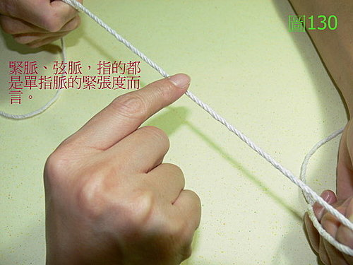
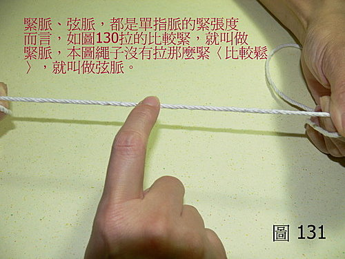
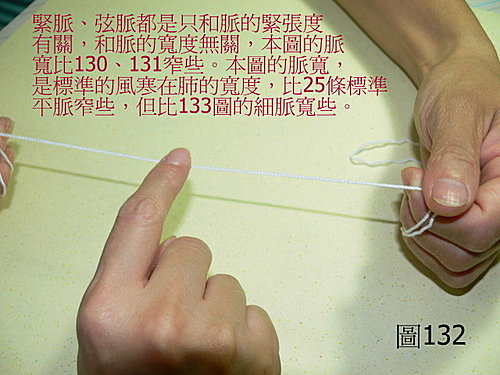
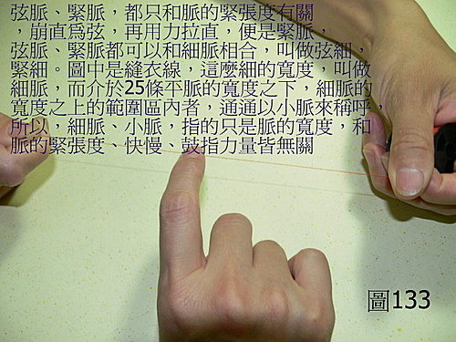

脈理醫理學 33.9：弦脈
作者：陳建元
說明：
弦脈和緊脈一樣，都是指單指脈的緊張度而言，與脈的寬度、遲數、鼓指力道的大小無關。所以單獨的弦脈，無法成為一個完整的脈象，必須搭配其他的脈寬和遲數，才能構成一個完整的脈象描述，如浮弦、沉弦、浮弦滑、沉弦澀、浮細弦數‥‥‥等等。〈圖130、131、132、133〉【〈圖133〉中的崩字是誤字，請自改成繃字。〈圖132〉拉得不緊，算是弦脈。】




本質和病機：
弦脈的本質和病機，主要有五個，而且大致上有一個規律性，浮弦主外感風寒，或是主陰虛；中弦或是沉弦，則主氣滯，或主疼痛，或主寒凝。
弦脈在一些特殊的例子中，乍看之下好像跳脫了規則性，但其實仔細剖析的話，常常是因為兼夾了其他病機的緣故，還是在可以推測的情理範圍之內，譬如《傷寒論》中的麻黃附子細辛證時，外感風寒其脈當浮，為什麼在這邊，脈象反而會沉下去呢？這是因為通常體質較旺的人，風寒外感時，脈象一般是浮緊或浮弦的；而平素體質較虛寒的人，先天就夾了一個〝虛、寒〞的病機在內，由於對抗外邪的力道較弱，故外候雖然還是風寒外感的表現，但是本來應該是浮緊或是浮弦的脈象，卻無力相抗，沉到第4～5層去了，而且也變成細微無力之類的脈象了，所以在用藥上，才會相對應的加入附子來溫經補陽，以助解表藥來解散外寒。又譬如有的人本是陰虛，標準的脈象應該是浮細數，但是久病陰虛的，必然兼及陽虛，於是陽也虛了，所以脈象雖然還是細，可是不浮，反而沉下去了，這也是在情理之內可以推測的。
兼脈：
浮弦是外感風寒或是陰血虧虛。中弦或是沉弦，則主氣滯，或主氣滯疼痛，或主寒凝。弦滑是氣滯痰阻。弦澀是氣滯血瘀。實弦是熱壅氣滯。弦數是氣滯化火。弦遲是氣滯兼寒。虛弦是氣虛而生氣滯。
六部弦脈：
右寸弦：浮弦為上呼吸道外感風寒諸症狀、為肺陰虛咳嗽；沉弦為肺氣滯而胸痛、沉滑弦為痰滯肺系而喘咳、沉弦澀為肺系有氣滯血瘀而胸痛、咳嗽。
右關弦：浮弦為風寒入脾，為腹悶、為腹瀉，或是脾胃陰虧，為胃炎、為腹悶、為消化不良、為吐酸、為呃逆、為便秘；沉弦為胃痛、為腹悶、為消化不良。
右尺弦：浮弦為外感風寒入於腎系，為筋骨痛、為大便或瀉或秘，為腸胃有水鳴聲，或是腎陰不足、或是腎陰腎陽皆不足；沉弦為下焦氣滯疼痛、為下焦寒滯而痛，沉弦緩為腎陽氣滯不行而水腫、為下焦濕濁。
左寸弦：浮弦為外感風寒入於心系，為頭痛、為胸悶、為喘、為項背几几，或是心陰血虧虛，為口乾舌燥、為失眠；沉弦為心系氣滯，為胸悶胸痛、為喘、為水腫。
左關弦：浮弦為外感風寒入於肝系，為目昏、為頭暈、為諸筋骨不利，或是為肝陰虛，為目澀，為筋骨不利；沉弦為肝氣滯，為脇痛、為便秘、為女子月事不利。
左尺弦：浮弦為外感風寒入於下焦，為小便不利、為小便赤澀、為小腹痛、為水腫，或是為腎陰虛不足；沉弦為下焦氣滯、為小便不利、為小便赤澀、為小腹痛、為水腫。
六脈大都同時拉成弦緊，直上直下跳動，古代稱為〝督脈為病〞、〝剛痙病〞，大都見於流腦或日本腦炎之腦膜刺激徵，即《金匱》云：「夫痙脈，按之緊如弦，直上下行」，又云：「《脈經》云：『痙家，其脈伏堅，直上下。』」。又人有較大的壓力時，肝脈常常會見到帶弦的脈象。
治療藥物：
弦脈的涵蓋範圍比較廣，所以要配合外候望診、問診來分析病機。譬如右寸浮弦，可以主上呼吸道外感風寒諸症狀、也可以主內傷的肺陰虛咳嗽，故要配合病程等各方面來分析；譬如兼見頭痛、鼻水、咳嗽等諸外感表證，舌苔薄白，則此肺脈之浮弦，病機當是一時性外感風寒所導致，當尋歸入肺經的表解風寒藥來治療，並可預估，幾日內便能痊癒；而若是肺脈雖然也是浮弦，但是並無其他外感表證的存在，在醫療場景上，只是在治療多年的慢性支氣管炎咳嗽宿疾，患者舌瘦紅乾，除了不定時的乾咳之外，並無其他外候的存在，則此右寸浮弦或是浮細弦，病機當是久年肺陰虧損之後，所導致的浮弦或是浮細弦，則當尋歸入肺經的潤燥滋陰藥來治療，而慢性久年病，也絕無短期內可以完全痊癒的道理。
因為弦脈的涵蓋範圍比較廣，所以要配合外候望診、問診來分析病機，分析出來之後，再依風寒、陰虛、氣滯、氣滯疼痛、寒凝之不同，各尋歸入該經系的藥物來治療即可。
【引用請先來信告知徵求同意，若有涉及販售營利等商業行為，版權所有拷貝盜用必究。】
【藥王脈學講壇】http://blog.xuite.net/drjychen/twblog